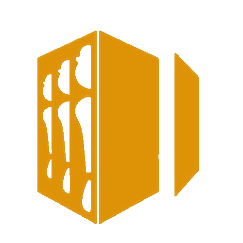

PrzystanekRezerwacje
Wybierz wolny termin i wyślij prośbę – potwierdzimy rezerwację.
Sprawdź wolne terminy ↗lub zadzwoń: 607 415 412
Jedna sala, wiele scenariuszy.
„Fantastycznie klimatyczne miejsce! Przemili i pomocni właściciele. Wynajęłam Przystanek na urodziny…”
„Wspaniałe miejsce z niepowtarzalnym klimatem. Gorąco polecam każdemu miłośnikowi darta i nie tylko.”
„Świetna atmosfera, super ludzie, każdy znajdzie tu jakiś turniej dla siebie :)”
Pomarańczowe dni są już zajęte, zielone to wydarzenia r4b4n. Wybierz wolny termin i wyślij prośbę o rezerwację – termin potwierdza właściciel sali.
Wybrana data: brak
Odpowiadamy zwykle w ciągu 24 h.
Administratorem danych podanych w formularzu (tytuł, e-mail, telefon, szczegóły) jest Paweł Rosół, prowadzący Przystanek Duży Pokój. Dane przetwarzamy wyłącznie w celu obsługi prośby o rezerwację i kontaktu w jej sprawie (art. 6 ust. 1 lit. b RODO). Więcej, w tym o Twoich prawach: Polityka prywatności.
kolektyw
r4b4n to kolektyw założony ze wspólnej zajawki do muzyki przez dwóch poznańskich DJ-ów: Pustego i Grajka.
Chcemy pokazywać, że oprócz zabawy i grania muzy można się też czegoś nauczyć, dowiedzieć i wybrać w podróż po różnych dźwiękach. Oboje jesteśmy wielogatunkowi w swoich setach, a łączy nas jedno: lubimy dobry bass.
Chcesz nas usłyszeć na żywo? Śledź stronę i nasze social media. Pozdro!
Cykl 2FACES powstał z myślą o połączeniu dwóch światów: muzyki komercyjnej, która ma dostarczać zabawy, oraz poszerzania świadomości o muzyce elektronicznej.
Dlatego podzieliliśmy go na dwa formaty:
Jeśli podoba Ci się ten pomysł, wpadaj do nas!
Pierwsza edycja już 14.11!
Napisz do nas: djgrajekkontakt@gmail.com
Obowiązuje od 1 listopada 2026 r.
Administratorem danych osobowych jest Paweł Rosół, prowadzący Przystanek Duży Pokój, Rondo Kaponiera, 60-829 Poznań (dalej: „my”). Kontakt w sprawach danych osobowych: przystanekduzypokoj@gmail.com, tel. 607 415 412.
Gdy wysyłasz prośbę o rezerwację, przetwarzamy dane podane w formularzu: tytuł wydarzenia, adres e-mail, numer telefonu, szczegóły rezerwacji oraz – jeśli zaznaczysz wydarzenie otwarte – opis publiczny. Robimy to, aby rozpatrzyć prośbę, skontaktować się z Tobą i zorganizować wydarzenie, czyli w celu podjęcia działań na Twoje żądanie przed zawarciem umowy (art. 6 ust. 1 lit. b RODO). Podanie danych jest dobrowolne, ale bez nich nie możemy obsłużyć rezerwacji.
Opis wydarzenia otwartego (bez e-maila i telefonu) jest widoczny publicznie na stronie obok daty, gdy rezerwacja zostanie potwierdzona.
Korzystamy z usług zewnętrznych dostawców, którzy przetwarzają dane w naszym imieniu: Supabase (baza danych rezerwacji), EmailJS (wysyłka powiadomienia o prośbie), Google (skrzynka e-mail Gmail oraz czcionki Google Fonts) i GitHub (hosting strony). Część z tych firm może przetwarzać dane poza Europejskim Obszarem Gospodarczym, na podstawie mechanizmów przewidzianych w RODO, takich jak standardowe klauzule umowne. Nie sprzedajemy danych i nie wykorzystujemy ich do reklamy.
Dane z prośby o rezerwację przechowujemy do czasu jej rozpatrzenia, a w przypadku potwierdzonej rezerwacji – do zakończenia wydarzenia i rozliczeń, nie dłużej niż 12 miesięcy od daty wydarzenia, chyba że dłuższy okres wynika z przepisów prawa.
Masz prawo do dostępu do swoich danych, ich sprostowania, usunięcia, ograniczenia przetwarzania, przeniesienia oraz wniesienia sprzeciwu. Aby skorzystać z tych praw, napisz na przystanekduzypokoj@gmail.com. Przysługuje Ci też prawo wniesienia skargi do Prezesa Urzędu Ochrony Danych Osobowych (ul. Stawki 2, 00-193 Warszawa).
Strona nie używa cookies reklamowych ani analitycznych. Liczymy jedynie anonimowo, ile razy wyświetlono poszczególne zakładki strony – bez cookies i bez zapisywania danych, które pozwalałyby Cię zidentyfikować. W pamięci Twojej przeglądarki (localStorage, sessionStorage) zapisujemy tylko wybrany motyw jasny/ciemny oraz – wyłącznie dla administratora – sesję logowania do panelu. Serwery dostawców (np. GitHub, Google Fonts) mogą technicznie rejestrować adres IP przy wyświetlaniu strony.
Możemy aktualizować tę politykę, np. gdy zmienią się usługi, z których korzystamy. Aktualna wersja jest zawsze dostępna na tej stronie.
Przystanek Duży Pokój · Rondo Kaponiera, Poznań · trasa ↗